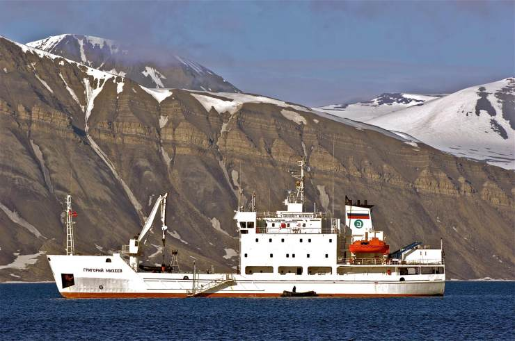
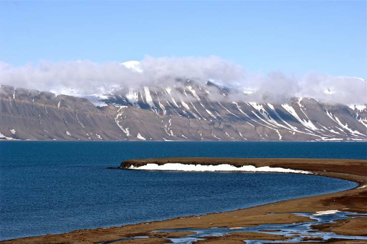

这里没有城市的喧嚣，没有现代文明的痕迹，静到只能用一句话来描述“You can hear the silence ！”（你能听到寂静）。在甲板上遇见旅伴时，常常只有会心地点点头或无声地笑一笑，谁都不想打破这种宁静。
南极和北极大部分地区的温度很少会升到0℃以上。
那里的冰冻美景则是由不同类型的冰构成的。雪落到陆地上后堆叠起来，雪粒在挤压下形成冰川冰。

巨大的冰川冰形成冰盖，覆盖在南极洲和格陵兰岛的大部分地区。这些冰盖的厚度通常超过2.5千米，蓄积了地球上的大部分淡水资源。在极区极端寒冷的地带，海洋表面会结冰，这被称为海冰。大部分水域以及南极洲的海岸周围都覆盖着海冰。然而，北冰洋和南极洲并没有完全被冰雪覆盖。到了夏季，极点以外的许多地区都处于无冰期，大地上长满了众多生长期很短的苔原植被。
此外，南北极天空中时常出现极光，发生在大气层中的电离层，是太阳风吹至地球的结果，十分美丽。